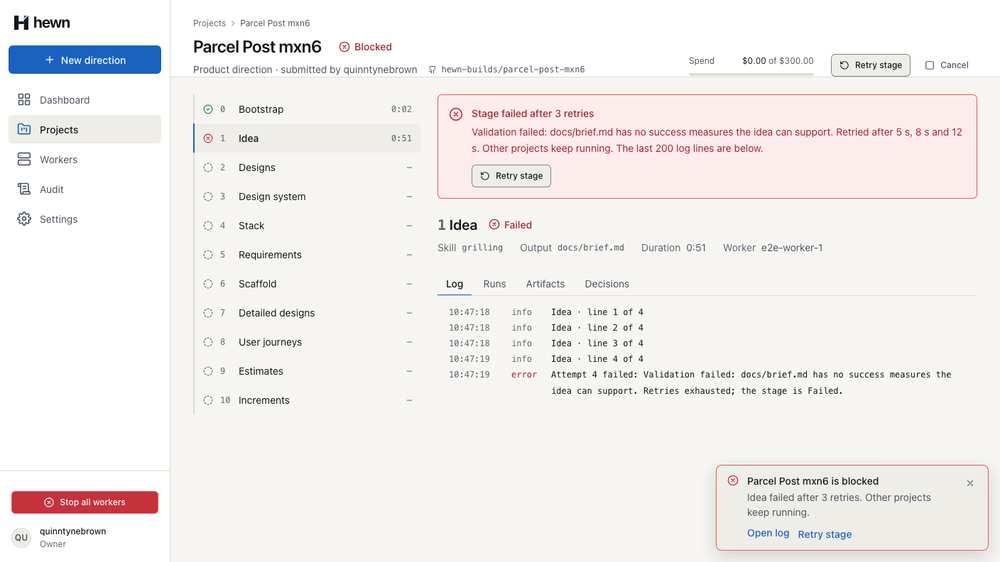
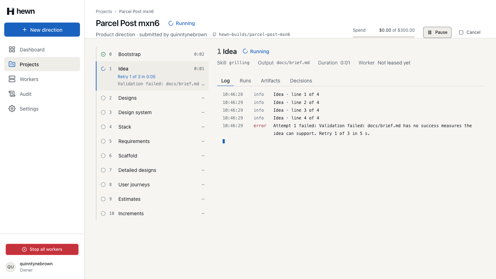
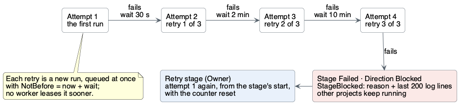
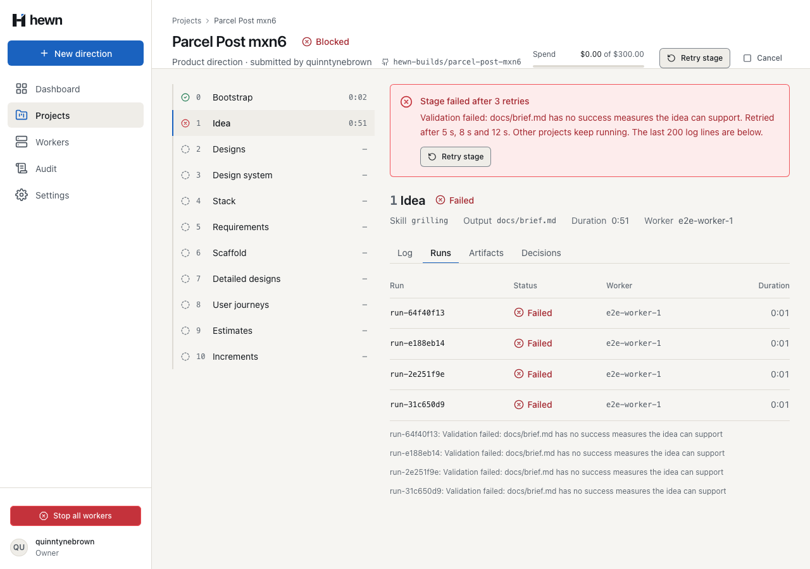
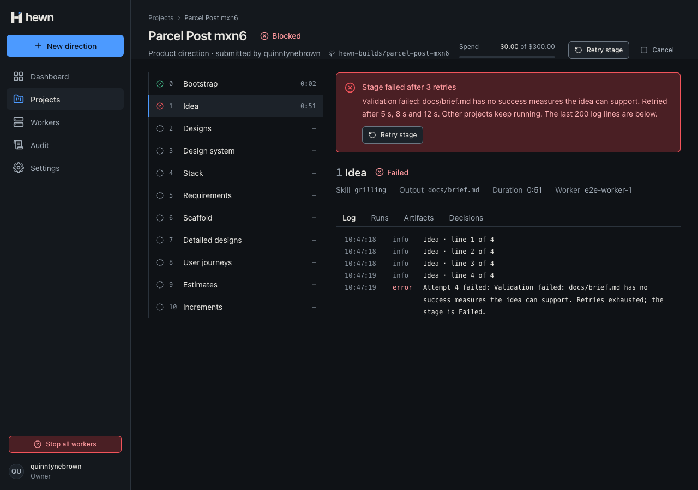
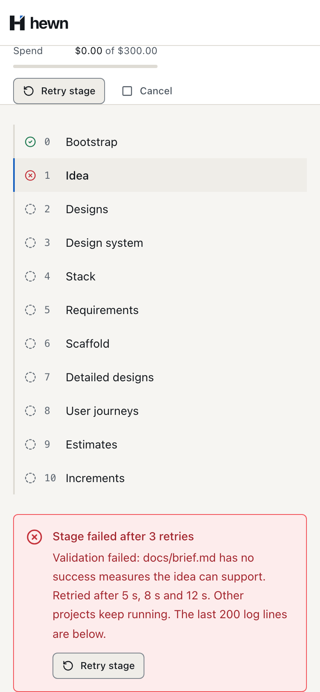
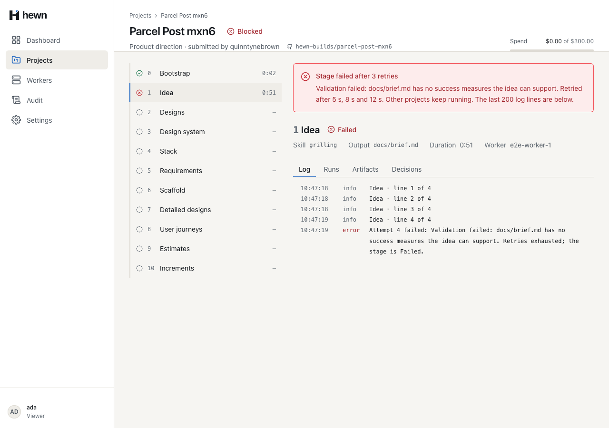

Retry on its own, block cleanly when stuck, and start again on one press.



if (run.Attempt <= backoff.Count)
{
var delay = backoff[run.Attempt - 1];
var retry = new Run(run.ProjectId, run.DirectionId, run.Stage, now, run.Attempt + 1, now.AddSeconds(delay));
db.Runs.Add(retry);
await RunLog.AppendAsync(db, events, run, [new RunLogEntry("error", $"Attempt {run.Attempt} failed: {reason}. Retry {run.Attempt} of {backoff.Count} in {Wait(delay)}.")], now, cancellationToken);
await events.AppendAsync(project.Id, RunRetryScheduled, new
{
directionId = direction.Id,
stage = run.Stage,
runId = retry.Id,
attempt = retry.Attempt,
maxAttempts = backoff.Count + 1,
delaySeconds = delay,
notBefore = retry.NotBefore,
for (var attempt = 0; attempt < Attempts; attempt++)
{
var due = clock.GetUtcNow();
var candidate = await db.Runs.AsNoTracking()
.Where(r => r.Status == RunStatus.Queued)
// A retry waits out its backoff (L2-006 AC1).
.Where(r => r.NotBefore == null || r.NotBefore <= due)
.Where(r => !db.Runs.Any(o => o.ProjectId == r.ProjectId && o.Status == RunStatus.Leased))
.Where(r => !db.LeasingSwitches.Any(s => s.Stopped))
.OrderBy(r => r.CreatedAt)
.Select(r => new { r.Id, r.ProjectId })
.FirstOrDefaultAsync(cancellationToken);
foreach (var (wait, attempt) in new[] { (120, 3), (600, 4) })
{
(await worker.FailAsync(run, "Skills source unreachable")).EnsureSuccessStatusCode();
// Nothing is leasable until the backoff has passed.
_factory.Clock.Advance(TimeSpan.FromSeconds(wait - 1));
Assert.Null(await worker.LeaseAsync());
_factory.Clock.Advance(TimeSpan.FromSeconds(1));
run = await LeaseAsync(worker);
Assert.Equal(0, run.Stage);
Assert.Equal(attempt, run.Body.GetProperty("attempt").GetInt32());
Assert.Equal(0, run.CheckpointStep);
runs.Add(run.RunId);
}
await RunLog.AppendAsync(db, events, run, [new RunLogEntry("error", $"Attempt {run.Attempt} failed: {reason}. Retries exhausted; the stage is Failed.")], now, cancellationToken);
var stage = direction.Block(run.Stage, reason, now);
await AppendStageAsync(direction, stage, cancellationToken);
await AppendDirectionAsync(direction, cancellationToken);
project.ChangeStatus(ProjectStatus.Blocked);
await AppendProjectAsync(project, cancellationToken);
await events.AppendAsync(project.Id, StageBlocked, new
{
directionId = direction.Id,
stage = run.Stage,
stageName = Stages.Names[run.Stage],
runId = run.Id,
attempts = run.Attempt,
reason,
lastLogLines = await LastLinesAsync(run, cancellationToken),
public async Task<DirectionControlResult> Handle(RetryStageCommand command, CancellationToken cancellationToken)
{
await events.LockAsync(command.ProjectId, cancellationToken);
var (project, direction) = await DirectionControl.LoadAsync(db, command.ProjectId, command.DirectionId, cancellationToken);
if (direction.Status != DirectionStatus.Blocked)
{
throw new ConflictException("not_blocked", "Only a Blocked direction can retry its failed stage.");
}
var stage = direction.FailedStage!.Value;
var run = await pipeline.OnRetryStageAsync(project, direction, cancellationToken);
await events.AppendAsync(project.Id, StageRetried, new { directionId = direction.Id, stage, retriedBy = user.Login }, cancellationToken);
await RunLog.InfoAsync(db, events, run, $"Retry stage requested by {user.Login}", clock.GetUtcNow(), cancellationToken);
await db.SaveChangesAsync(cancellationToken);
await events.PublishAsync(cancellationToken);
return DirectionControl.Result(direction);

toasts.show({
...blockedToast(
project?.name ?? 'This project',
event.payload['stageName'] as string,
(event.payload['attempts'] as number) - 1,
),
actions: [
{ label: 'Open log', link: ['/projects', event.projectId], queryParams: { stage } },
...(this.session.isOwner()
? [{ label: 'Retry stage', run: () => this.retryStage(directionId) }]
: []),
],
});



const executor = new ScriptedStageExecutor({
stepMs: 0,
failStage: 3,
failTimes: 2,
failReason: 'Validation failed',
});
const attempt = () => executor.plan(run(3), context)[1]!.execute(new AbortController().signal);
await expect(attempt()).rejects.toThrow('Validation failed');
await expect(attempt()).rejects.toThrow('Validation failed');
await expect(attempt()).resolves.toBeUndefined();
4 new, real API
1 and 12 new
1 new pipeline test with a real worker
// AC3: Retry stage runs Bootstrap again from its start, and this time it succeeds.
await project.calloutRetryStage.click();
await expect(project.projectStatus).toHaveText('Running');
await expect(project.blockedCallout).toHaveCount(0);
await expect(project.logLines.filter({ hasText: 'Retry stage requested by quinntynebrown' })).toHaveCount(1);
await expect.poll(async () => (await project.stageStatuses())[0], { timeout: 60_000 }).toBe('Succeeded');
const types = (await project.events()).map((e) => e.type);
expect(types.filter((t) => t === 'RunRetryScheduled')).toHaveLength(3);
expect(types.filter((t) => t === 'StageBlocked')).toHaveLength(1);
expect(types.indexOf('StageRetried')).toBeGreaterThan(types.indexOf('StageBlocked'));